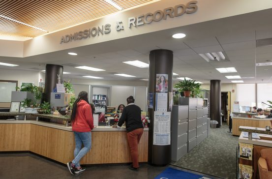

About Institute
Open Mind Institute of Information Technology (OMIIT) was established in 2002 in vijayawada, Andhra pradesh, to cater to the educational needs of the general public. It acquired Autonomous status in the year 2017. The experience gained by Open Mind through its earlier institutions at Guntur has only helped in establishing very high quality standards right from the inception and also is one of the reasons for the success.

Admissions 2020
Our students come from diverse cultures, backgrounds, and experiences from across the globe. Welcome to our world.
OMIIT offers B.Tech courses in a number of specializations. The institute also offers M.Tech, MBA and MCA programs. The annual intake for UG courses is 1140 and for M.Tech, the intake is 126 students. For MBA and MCA courses, the annual intake is 120 and 60, respectively.
-
"Applications for all the courses have to be submitted online."
-
"Candidates should have qualified 10+2 from a recognized board for admission to B.Tech program. Applicants who have obtained B.Tech degree can apply for M.Tech courses."
-
"A graduation degree is prerequisite for admissions to MBA and MCA courses."
-
"Admissions to B.Tech and M.Tech are based on candidates’ rank in Engineering Agricultural and Medical Common Entrance Test (EAMCET) and Post Graduate Engineering Common Entrance Test (PGECET), respectively."
-
"For MBA and MCA, admissions will be conducted through Integrated Common Entrance Test (ICET) conducted at state level."
Campus life
Make the most of your time on campus. Get involved. Make lifelong friends.